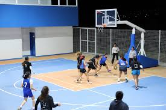

Selección femenil de voleibol clasifica al Torneo Regional tras una racha histórica de victorias
La selección femenil de voleibol de la Universidad logró su clasificación al Torneo Regional Universitario 2025, luego de cerrar una racha histórica de ocho victorias consecutivas en la fase estatal. El partido decisivo se disputó este fin de semana en el Gimnasio Universitario, donde el equipo local venció 3–1 a la Universidad del Norte frente a más de 500 espectadores.
Desde el inicio del encuentro, el equipo mostró un dominio sólido en defensa y ataque, destacando el desempeño de la capitana Mariana Ortiz, quien anotó 22 puntos y realizó bloqueos clave en los momentos más críticos del partido.
La entrenadora del equipo, Profesora Laura Méndez, señaló que la clasificación es el resultado de meses de
entrenamiento físico y técnico:
“Este equipo ha demostrado compromiso, disciplina y un enorme espíritu de compañerismo. Sabemos que el regional
será un reto, pero estamos listas para representar a nuestra universidad con orgullo”.
Además del excelente desempeño deportivo, la selección ha destacado por su participación en programas de apoyo estudiantil, promoviendo hábitos saludables y fomentando la integración entre facultades. La Dirección de Deportes informó que, gracias a estos logros, el equipo recibirá nuevo equipamiento especializado y apoyo fisioterapéutico para su preparación rumbo al torneo.
El Torneo Regional Universitario se llevará a cabo la próxima semana en la capital del estado, donde se enfrentarán las mejores selecciones de cinco universidades de la región. De obtener buenos resultados, la selección femenil podría avanzar a la fase nacional, un logro que la institución no ha alcanzado desde 2019.